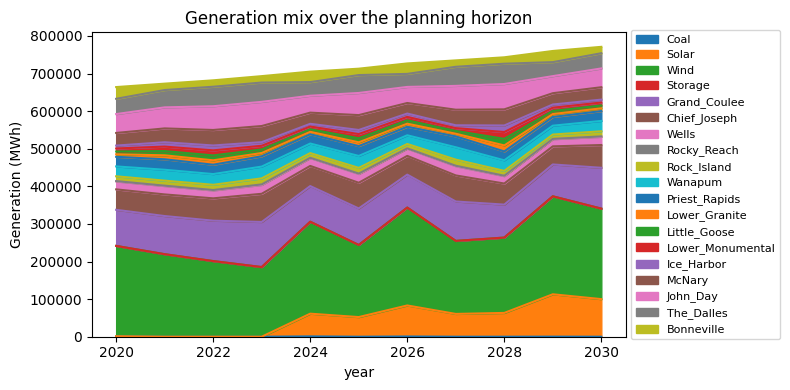

Run online (zero install): Open in Colab – click and run; needs a Google account.
Run locally: clone the repo and install with the notebook extra:
git clone https://github.com/PREP-NexT/PREP-SHOT.git
cd PREP-SHOT
pip install -e .[notebook]
jupyter lab doc/source/Quickstart.ipynb
[1]:
# On Google Colab, install PREP-SHOT and clone the repo so the
# path-walk below can locate run.py / config.json. No-op on
# Local installs already have prepshot importable.
try:
import google.colab # type: ignore # noqa: F401
IS_COLAB = True
except ImportError:
IS_COLAB = False
if IS_COLAB:
import os
if not os.path.isdir('/content/PREP-SHOT'):
!git clone --depth=1 https://github.com/PREP-NexT/PREP-SHOT.git /content/PREP-SHOT
%cd /content/PREP-SHOT
!pip install --quiet -e .
!pip install --quiet matplotlib h5netcdf
Quickstart (30 minutes)¶
Goal: take a fresh checkout of PREP-SHOT, solve the shipped example, read the results, change one input, and re-solve – all in about half an hour. No prior knowledge of capacity-expansion modeling is assumed; everything happens against the examples/three_zone/ dataset that ships with the repo.
If anything in this page does not work for you, please open a GitHub issue – we read every report and a broken Quickstart is the bug we most want to know about.
Scenario background¶
The shipped examples/three_zone/ dataset is inspired by real-world data, drawing primarily from the U.S. Energy Information Administration (EIA), the U.S. Army Corps of Engineers (USACE), and the U.S. National Renewable Energy Laboratory (NREL).
It models a cascading hydropower system of 15 interconnected stations across three balancing authorities – BA1, BA2, and BA3 – each with distinct jurisdictional connections to their local reservoirs. Aside from hydropower, no other existing generation or transmission is in place; the model decides what to build from four candidate technologies (coal, wind, solar, energy storage) along an electric-mix pathway from 2020 to 2030 toward zero-carbon emissions. We use a 48-hour representative period for the analysis.
Step 1 – Install (5 minutes)¶
PREP-SHOT requires Python 3.9 or newer. Conda is recommended so the optimization-solver dependencies stay isolated:
conda create -n prep-shot python=3.11 -y
conda activate prep-shot
git clone https://github.com/PREP-NexT/PREP-SHOT.git
cd PREP-SHOT
pip install -e .
The default solver is the open-source HiGHS, installed automatically as a wheel. To use a commercial solver (Gurobi, COPT, MOSEK) instead, set solver in the scenario’s config.json – see the Model Inputs/Outputs page.
Step 2 – Solve the shipped example (5 minutes)¶
The repo ships a self-contained 3-zone, 11-year example in examples/three_zone/. We solve it programmatically so this notebook works regardless of the working directory.
[2]:
import sys
import os
import io
import tempfile
import pathlib
# Notebooks inherit the kernel launcher's argv; clear it so
# prepshot.set_up.parse_cli_arguments() sees no scenario flags.
sys.argv = ['notebook']
# Locate the repo root (the dir containing run.py).
repo_root = pathlib.Path.cwd()
while not (repo_root / 'run.py').exists():
if repo_root == repo_root.parent:
raise RuntimeError(
'Could not find PREP-SHOT repo root; run this notebook '
'from a checkout of PREP-NexT/PREP-SHOT.'
)
repo_root = repo_root.parent
scenario = repo_root / 'examples' / 'three_zone'
print(f'Scenario: {scenario}')
Scenario: /Users/energy/01-doing/PREP-SHOT-tutorial/PREP-SHOT/examples/three_zone
[3]:
from prepshot.cli import main
# HiGHS writes its progress log via C-level stdout (file
# descriptor 1), which bypasses Python's sys.stdout. Redirect
# the file descriptor to a tempfile during the solve so the
# notebook output stays readable.
log = tempfile.NamedTemporaryFile('w+', delete=False, prefix='prepshot_solve_')
log_path = log.name
sys.stdout.flush()
saved = os.dup(1)
os.dup2(log.fileno(), 1)
cwd_before = os.getcwd()
os.chdir(scenario) # solve_model writes output/ relative to cwd
try:
solved = main(root_dir=str(scenario))
finally:
sys.stdout.flush()
os.dup2(saved, 1)
os.close(saved)
log.close()
os.chdir(cwd_before)
print(f'log: {log_path}')
2026-05-05 10:08:15 INFO: Set parameter solver to value highs
2026-05-05 10:08:15 INFO: Set parameter input folder to value input
2026-05-05 10:08:15 INFO: Set parameter output_filename to value year.nc
2026-05-05 10:08:15 INFO: Set parameter time_length to value 48
2026-05-05 10:08:15 INFO: Start running 'create_model'
2026-05-05 10:08:15 INFO: Loaded HiGHS library: /Users/energy/miniconda3/envs/prep-shot/lib/python3.9/site-packages/highsbox/highs_dist/lib/libhighs.dylib
2026-05-05 10:08:15 INFO: Loaded highs library automatically.
2026-05-05 10:08:16 INFO: Finished 'create_model' in 1.33 seds
2026-05-05 10:08:16 INFO: Start running 'solve_model'
2026-05-05 10:08:16 INFO: Starting iteration recorded at 2026-05-05 10:08:16.
2026-05-05 10:08:31 INFO: Water head error: 371.93%
2026-05-05 10:11:14 INFO: Water head error: 23.38%
2026-05-05 10:12:11 INFO: Water head error: 19.46%
2026-05-05 10:12:11 WARNING: Ending iteration recorded at 2026-05-05 10:12:11.Failed to converge. Maximum iteration exceeded.
2026-05-05 10:12:11 INFO: Finished 'solve_model' in 234.56 seds
2026-05-05 10:12:11 INFO: Start running 'extract_results_hydro'
2026-05-05 10:12:11 INFO: Start running 'extract_results_non_hydro'
2026-05-05 10:12:11 INFO: Finished 'extract_results_non_hydro' in 0.03 seds
2026-05-05 10:12:11 INFO: Finished 'extract_results_hydro' in 0.04 seds
2026-05-05 10:12:11 INFO: Results are written to ./output/year.nc
2026-05-05 10:12:11 INFO: Start running 'save_to_excel'
2026-05-05 10:12:16 INFO: Finished 'save_to_excel' in 5.41 seds
2026-05-05 10:12:16 INFO: Results are written to separate excel files
log: /var/folders/y_/ypyrt83d1hl9fhjtt_ftpwg00000gn/T/prepshot_solve_nd6kj4sl
[4]:
# Pick out the final objective value from the captured log.
with open(log_path) as f:
log = f.read()
objective_lines = [l for l in log.splitlines() if 'Objective value' in l]
if objective_lines:
# The solve runs `iteration_number` head iterations; each
# prints an objective. The last one is what matters.
print(objective_lines[-1].strip())
print(f'Solved: {solved}')
Objective value : 1.8804965672e+11
Solved: True
On commodity hardware the default settings (48 hours, 1 representative month, 3 head iterations) finish in around 2 minutes. The solver log will report Objective value : 1.8809...e+11, and a NetCDF file appears under output/. Everything in the rest of this notebook reads from that file.
The log lines Water head error: ... and the warning Failed to converge. Maximum iteration exceeded. are normal for the default settings: PREP-SHOT runs three head-iteration rounds and reports the final residual. Bump iteration_number in the scenario’s config.json if you want a tighter (slower) converged solve.
Step 3 – Open the results (10 minutes)¶
PREP-SHOT writes results in xarray’s NetCDF format, so any tool that reads NetCDF can consume them.
[5]:
import xarray as xr
import json
config = json.loads((scenario / 'config.json').read_text())
# config stores the filename WITHOUT extension; the model writes
# both .nc (xarray) and .xlsx alongside each other.
output_path = (
scenario / 'output'
/ (config['general_parameters']['output_filename'] + '.nc')
)
print(f'Reading results from: {output_path}')
ds = xr.open_dataset(output_path)
print(sorted(ds.data_vars))
Reading results from: /Users/energy/01-doing/PREP-SHOT-tutorial/PREP-SHOT/examples/three_zone/output/year.nc
['carbon', 'carbon_breakdown', 'charge', 'cost', 'cost_fix', 'cost_fix_breakdown', 'cost_newline', 'cost_newline_breakdown', 'cost_newtech', 'cost_newtech_breakdown', 'cost_var', 'cost_var_breakdown', 'gen', 'genflow', 'income', 'install', 'public_debt_newtech', 'shadow_price_demand', 'spillflow', 'trans_export']
Three things worth a first look:
1. Total cost. A single number, the NPV of system cost over the planning horizon.
[6]:
print(f"Total cost: ${float(ds.cost):,.0f}")
Total cost: $188,049,656,721
2. Installed capacity over time. Which technologies expanded, in which zones, and when.
[7]:
install_by_year = ds["install"].sum("zone").to_pandas()
install_by_year
[7]:
| tech | Coal | Solar | Wind | Storage | Grand_Coulee | Chief_Joseph | Wells | Rocky_Reach | Rock_Island | Wanapum | Priest_Rapids | Lower_Granite | Little_Goose | Lower_Monumental | Ice_Harbor | McNary | John_Day | The_Dalles | Bonneville |
|---|---|---|---|---|---|---|---|---|---|---|---|---|---|---|---|---|---|---|---|
| year | |||||||||||||||||||
| 2020 | 34.526238 | 0.000000 | 28044.058684 | 1.109202e-13 | 5054.0 | 2234.0 | 741.0 | 1126.0 | 482.0 | 890.0 | 828.0 | 747.0 | 748.0 | 784.0 | 525.0 | 1022.0 | 1943.0 | 1414.0 | 921.0 |
| 2021 | 34.526238 | 0.000000 | 28044.058684 | 1.109202e-13 | 5054.0 | 2234.0 | 741.0 | 1126.0 | 482.0 | 890.0 | 828.0 | 747.0 | 748.0 | 784.0 | 525.0 | 1022.0 | 1943.0 | 1414.0 | 921.0 |
| 2022 | 34.526238 | 0.000000 | 28044.058684 | 1.109202e-13 | 5054.0 | 2234.0 | 741.0 | 1126.0 | 482.0 | 890.0 | 828.0 | 747.0 | 748.0 | 784.0 | 525.0 | 1022.0 | 1943.0 | 1414.0 | 921.0 |
| 2023 | 34.526238 | 0.000000 | 28044.058684 | 1.109202e-13 | 5054.0 | 2234.0 | 741.0 | 1126.0 | 482.0 | 890.0 | 828.0 | 747.0 | 748.0 | 784.0 | 525.0 | 1022.0 | 1943.0 | 1414.0 | 921.0 |
| 2024 | 34.526238 | 19256.365123 | 28044.058684 | 1.109202e-13 | 5054.0 | 2234.0 | 741.0 | 1126.0 | 482.0 | 890.0 | 828.0 | 747.0 | 748.0 | 784.0 | 525.0 | 1022.0 | 1943.0 | 1414.0 | 921.0 |
| 2025 | 34.526238 | 19256.365123 | 28044.058684 | 1.109202e-13 | 5054.0 | 2234.0 | 741.0 | 1126.0 | 482.0 | 890.0 | 828.0 | 747.0 | 748.0 | 784.0 | 525.0 | 1022.0 | 1943.0 | 1414.0 | 921.0 |
| 2026 | 34.526238 | 26561.715951 | 29957.801139 | 6.589525e-14 | 5054.0 | 2234.0 | 741.0 | 1126.0 | 482.0 | 890.0 | 828.0 | 747.0 | 748.0 | 784.0 | 525.0 | 1022.0 | 1943.0 | 1414.0 | 921.0 |
| 2027 | 34.526238 | 26561.715951 | 29957.801139 | 6.589525e-14 | 5054.0 | 2234.0 | 741.0 | 1126.0 | 482.0 | 890.0 | 828.0 | 747.0 | 748.0 | 784.0 | 525.0 | 1022.0 | 1943.0 | 1414.0 | 921.0 |
| 2028 | 34.526238 | 26561.715951 | 29957.801139 | 6.589525e-14 | 5054.0 | 2234.0 | 741.0 | 1126.0 | 482.0 | 890.0 | 828.0 | 747.0 | 748.0 | 784.0 | 525.0 | 1022.0 | 1943.0 | 1414.0 | 921.0 |
| 2029 | 34.526238 | 39334.186600 | 29957.801139 | 6.589525e-14 | 5054.0 | 2234.0 | 741.0 | 1126.0 | 482.0 | 890.0 | 828.0 | 747.0 | 748.0 | 784.0 | 525.0 | 1022.0 | 1943.0 | 1414.0 | 921.0 |
| 2030 | 34.526238 | 39334.186600 | 29957.801139 | 6.589525e-14 | 5054.0 | 2234.0 | 741.0 | 1126.0 | 482.0 | 890.0 | 828.0 | 747.0 | 748.0 | 784.0 | 525.0 | 1022.0 | 1943.0 | 1414.0 | 921.0 |
3. Locational marginal prices (shadow prices on demand). This is the dual of the power-balance constraint – the marginal cost of one extra MWh of demand at each (hour, month, year, zone). Useful for diagnosing where the system is most stressed.
[8]:
# LMP at zone BA1 in 2025, averaged over the modeled month:
lmp = ds["shadow_price_demand"].sel(zone="BA1", year=2025).mean("month")
print(lmp)
<xarray.DataArray 'shadow_price_demand' (hour: 48)> Size: 384B
array([ 0.00000000e+00, 2.33266957e-13, 2.39959157e-13, 0.00000000e+00,
0.00000000e+00, 0.00000000e+00, 0.00000000e+00, 0.00000000e+00,
0.00000000e+00, 0.00000000e+00, 0.00000000e+00, 0.00000000e+00,
0.00000000e+00, 0.00000000e+00, 0.00000000e+00, 0.00000000e+00,
-9.41463675e-14, 0.00000000e+00, 0.00000000e+00, 1.93438793e-02,
0.00000000e+00, 0.00000000e+00, 0.00000000e+00, 0.00000000e+00,
0.00000000e+00, 0.00000000e+00, 0.00000000e+00, 0.00000000e+00,
0.00000000e+00, 0.00000000e+00, 0.00000000e+00, 0.00000000e+00,
0.00000000e+00, 0.00000000e+00, 0.00000000e+00, 0.00000000e+00,
0.00000000e+00, 0.00000000e+00, 0.00000000e+00, 0.00000000e+00,
0.00000000e+00, 0.00000000e+00, 0.00000000e+00, 0.00000000e+00,
0.00000000e+00, 0.00000000e+00, 0.00000000e+00, 0.00000000e+00])
Coordinates:
* hour (hour) int64 384B 1 2 3 4 5 6 7 8 9 ... 40 41 42 43 44 45 46 47 48
year int64 8B 2025
zone <U3 12B 'BA1'
Values in shadow_price_demand are NPV-discounted dollars per MWh. To recover undiscounted real-year prices, divide by the year’s variable-cost factor (computed in prepshot.load_data.compute_cost_factors).
A minimal generation-mix chart:
[9]:
%matplotlib inline
import matplotlib.pyplot as plt
gen_by_tech = (
ds["gen"]
.sum(["hour", "month", "zone"]) # sum over time and space
.to_pandas() # rows=year, cols=tech
.clip(lower=0) # storage net-discharge can be ~0; clamp
)
# Drop techs that never generate (e.g. storage round-trips to ~0):
gen_by_tech = gen_by_tech.loc[:, gen_by_tech.sum() > 0]
fig, ax = plt.subplots(figsize=(8, 4))
gen_by_tech.plot.area(ax=ax)
ax.set_ylabel("Generation (MWh)")
ax.set_title("Generation mix over the planning horizon")
ax.legend(loc="center left", bbox_to_anchor=(1.0, 0.5), fontsize=8)
fig.tight_layout()
plt.show()

Step 4 – Change one input and re-solve (5 minutes)¶
Every input is a CSV under examples/three_zone/. To see how the model responds to a change, try one of these single-file edits.
Option A – bump demand 20% in one zone. Open examples/three_zone/demand.csv (long format: zone, year, month, hour, unit, value) and multiply the BA1 column by 1.2 in your editor of choice. Then re-run from examples/three_zone/ (cd examples/three_zone && python -m prepshot). The objective will rise – the model has to build more capacity or import more from neighboring zones to serve the extra load. shadow_price_demand at BA1 should also increase in the most constrained
hours.
Option B – introduce a carbon tax. Open examples/three_zone/policy_carbon_tax.csv and replace the value column with a non-zero number (e.g. 50 USD/tonneCO2). Re-run from the scenario directory; the generation mix should shift away from coal and gas toward zero-carbon technologies, raising cost_carbon in the breakdown.
Tip – run scenarios without overwriting your baseline. Save your modified file as examples/three_zone/demand_high.csv and run python -m prepshot --demand=high from inside examples/three_zone/. PREP-SHOT appends the suffix to the file name, so the baseline demand.csv is left untouched. Output goes to examples/three_zone/output/year_high.nc.
Step 5 – Where to next¶
Model Inputs/Outputs – full input / output reference, including optional carbon-market and finance modules.
`examples/southeast_asia/SoutheastAsia.ipynb<../../examples/southeast_asia/SoutheastAsia.ipynb>`__ – a realistic case study (Lower Mekong basin, 5 countries, 57 cascading reservoirs).Mathematical Notation – the underlying linear program.
Changelog – what’s new in each release.
If you used PREP-SHOT in published work, please cite it – see the Citation Guide. And if you ran into something rough, the fastest fix is to file an issue on GitHub.